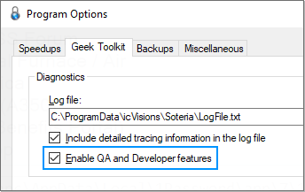
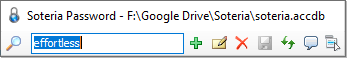

Release History
Version 1.0.0.45 (July 27th, 2025)
Revenge of the Boomers
User Interface Update
- Fonts have been enlarged on the main window to combat astigmatism and eye fatigue for us old folks.
- Switched to the Consolas font for fields where confusion could arise between similar-looking characters, like O vs 0 and l vs I.
- Updated the About window to display additional information, like the location of key files and folders, and beautified the presentation using the same CSS styles as the Help pane content.
Help Pane Content
- Added a Help Topics Index, which can be accessed by clicking thepage header logo.
- Added a keyboard shortcuts page.
- Greatly improved performance and memory usage by eliminating all WordPress HTML elements and CSS overhead.
- Resolved issues where runtime JavaScript errors could pop up unexpectedly.
QA and Developer Features
Added Enable QA and Developer Features to the Program Options window. When enabled, the following changes occur:
- Help content is sourced from the local machine, enabling developers to test updates before publishing them to the public website.
- The help topics rotation is sourced from the local-help.xml file instead of the public help.xml file.
- The
 Unit Tests link appears in the header, allowing web content developers to quickly assess effects of CSS style changes on key HTML elements.
Unit Tests link appears in the header, allowing web content developers to quickly assess effects of CSS style changes on key HTML elements. - The About window HTML content is loaded from a local template file to facilitate rapid development.
- Events are written to the log file.
Version 1.0.0.41 (November 2nd, 2015)
The Final Automatic Update
Finding Faster Finds
- It's now even faster to switch to Soteria and find your entry. Suppose you've already opened a web page from one entry, and now you're returning to the Soteria main window to find a different entry. Soteria recognizes that the Find window was the last thing you used and automatically selects all of the text inside so you don't have to clear it -- just start typing, and the old contents are automatically replaced by what you type -- no Delete key required.
- Potentially resolved an issue that was causing errors to be written to the log when toolbar buttons are double-clicked.